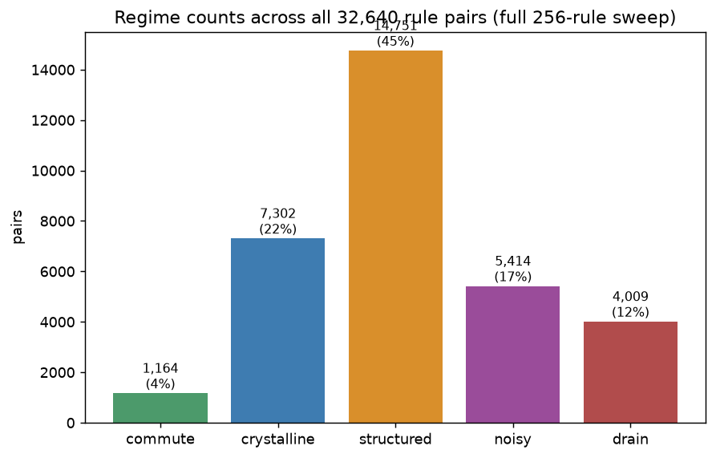
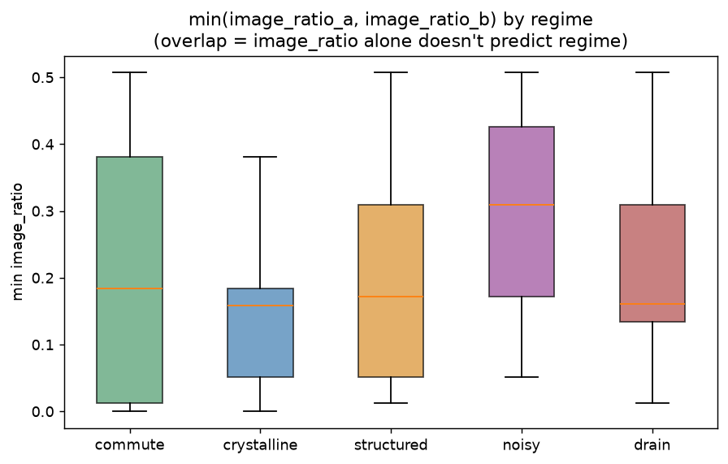
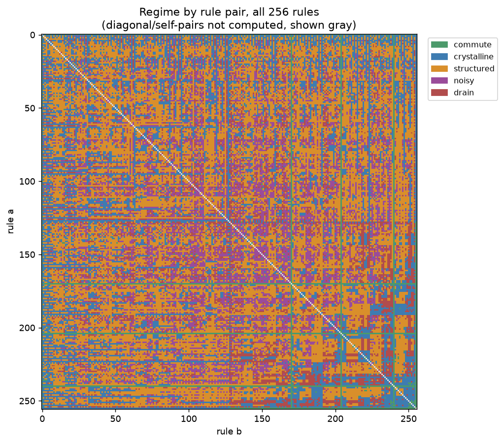
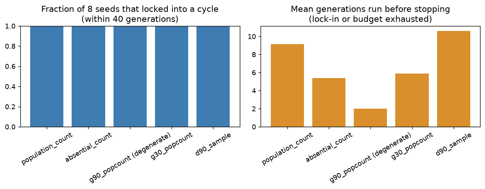

What we actually know — and how sure we are
Each card below is labeled with how confident we are in it. Not everything here is "true and done" — several of the newer instruments are included specifically because they're not settled yet, and saying so plainly is the point.
Structured divergence is the modal outcome, not the exception
EstablishedAcross all 256 elementary CA rules — all 32,640 unordered pairs, 5 random seeds each — the disagreement regime between two rules breaks down as:

structured divergence is the regime that doesn't exist for a single rule acting on itself — it only appears once two distinct rules are in play, and the intuition going in was that it might be a narrow, special-case sliver between "boring agreement" and "pure noise." At full scale it's actually the largest single regime, covering nearly half of all pairs. Two arbitrary elementary CA rules are more likely than not to settle into a persistent, legible, non-identical relationship rather than either merging or dissolving into static.
The regime-classification thresholds (the compressibility cut
points that separate "crystalline" from "structured" from "noisy")
were read off the qualitative pilot description, not fit to this
distribution — worth histogramming compressibility
across all 32,640 pairs directly and sanity-checking those cut
points before treating the exact percentages above as precise.
Rule "lossiness" alone doesn't predict the regime
Established
The working hypothesis was that drain — two
paths collapsing into a shared trivial attractor — should
correlate with low image_ratio (rules that destroy a
lot of state-space information, rich in Garden-of-Eden
configurations with no predecessor). It does correlate, but the
distributions for drain, crystalline, and structured all overlap
heavily here — there's no clean threshold on image_ratio that
separates drain from the rest. This confirms, now at full scale,
something the pilot sweep only hinted at with a single
counterexample (two rules sharing an identical image_ratio,
0.135, but one drains against rule 4 and the other doesn't).
The actual condition is probably a finer structural compatibility between the specific pair, closer to Moore & Boykett's algebraic conditions for commuting CA (permutivity, linearity-in-each-other) than to any single scalar score. Worth testing those conditions directly against the drain set.
The full regime landscape, all 256×256 rule pairs
Established (descriptive)
The banding is the headline: some rules behave almost the same way against every partner (a strong vertical or horizontal stripe of one color), which suggests a rule's regime behavior might be more a property of the rule itself than of the specific pairing — in tension with the image_ratio finding above, which says the relevant structure is genuinely pairwise. Both can be true: a rule might have a strong individual tendency and the exact pairing still matters at the margins.
Worth ranking rules by "how often does this rule's regime depend on its partner vs. stay constant" — turn the visual banding into an actual per-rule statistic.
Meta-evolution lineages reliably wander, then lock into a small stable cycle
Suggestive
Each generation here derives a new "child" rule from the current state, classifies the parent→child handoff, and hands control to the child. The pattern shows up reliably: a few generations of structured or noisy handoffs, then a fixed point or small repeating cycle in rule space itself — not a runaway tower of ever-new rules, a small found platform the lineage settles onto and stays on. This is the open-ended-evolution question (why does search tend to collapse into stable, boring attractors instead of continuing to generate novelty?) showing up in the simplest possible version of this substrate, unprompted.
Confirmed reproducible across multiple runs and generator functions (every run in the generator comparison below locked in within the 40-generation budget) — but still one starting rule (90), one starting-state distribution, and a fairly short budget. Worth checking whether any generator/seed combination fails to lock in given a much longer budget, rather than assuming all lineages eventually do.
How a child rule gets generated changes how long the lineage searches
Suggestive
Five different functions for turning "current state" into "next
rule number," each run across 8 seeds: a deliberately
information-free control (G(state, 90) — which
is provably the all-zero array for every state, since
rule 90 is affine with zero bias, so this generator always emits
rule 0), through population count, an absential-cell count, the
same G-based construction but with non-affine rule 30
instead, up to 8 bits sampled from D(state, 90). Mean
generations before locking into a cycle: the degenerate control
locks in almost immediately (~2 generations) — exactly what
you'd expect from a generator carrying zero information —
while the richest generator tested explores roughly
5× longer (~10.6 generations) before
settling. The ranking is consistent with "more state-information in
the generator → longer search before finding a stable
platform," and the affine-theorem control landing exactly at the
floor is a nice independent confirmation that the affine theorem
is doing real work here, not just in the single-rule case.
8 seeds per generator, one starting rule, one generation budget (40) that every run finished well within — this is a real first signal, not a settled result. The next real question isn't just "how long before lock-in" but "how different are the stable cycles each generator finds" — does a longer search reach a larger, more diverse set of stable platforms, or just take a more roundabout path to the same handful of cycles?
Absential field as a Class-IV detector: tested, inconclusive
Exploratory
The hypothesis: cells that are off but adjacent to something alive (the absential mask) might compress in a more class-discriminating way than the raw state does — a candidate cheap Class-IV detector. Tested against one canonical rule per Wolfram class (0, 4, 30, 110): the absential field's compressibility tracks the raw state's compressibility closely in every case (e.g. rule 110: raw 0.920 vs. absential 0.828; rule 30: raw 1.005 vs. absential 0.905) — consistently a little more compressible, never dramatically, and not obviously more class-discriminating than just looking at the raw state. This test does not confirm the original hypothesis.
Four rules is a thin sample, and elementary CA mostly don't have the kind of persistent localized structures (gliders, still lifes) the original hypothesis was framed around — a fairer test would look at 2D automata with known stable objects (e.g. Conway's Life), or at minimum many more 1D rules per class before concluding the idea doesn't work. Currently sitting at "tried the easy version, it didn't obviously help" rather than "ruled out."